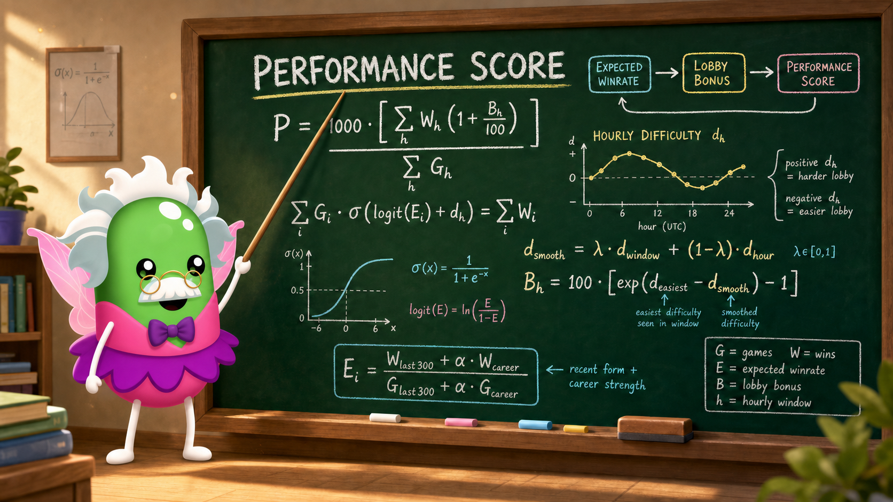

Monthly WR
Your wins divided by your games played during the month.

Every win counts. Wins against a stronger field count a little more.
Your wins divided by your games played during the month.
Before an hour starts, previous games help us estimate each player’s current strength.
The easiest lobbies receive no bonus. Harder lobbies receive a bigger bonus.
Wins and their Lobby Bonuses are combined into one easy-to-compare score.
SAME TIME · DIFFERENT LOBBY
Sunday at 12:00 can feel completely different from Monday at 12:00. We rate each observed hour separately.
Same time. Different players. Different difficulty.
A SIMPLE EXAMPLE
7 wins ÷ 10 games = 70% WR
70% WR × 1.00 = 700
Performance Score5 wins ÷ 10 games = 50% WR
50% WR × 1.40 = 700
Performance ScoreA 50% winrate during a hard hour can be worth the same as a 70% winrate during an easy hour. Times are shown in your local timezone.
WHO PLAYS WHEN?
BIGGEST WINNERS BY TIME Last 30 days
Our observations currently cover approximately — of the available hourly period. Some player profiles are not known, so Lobby Bonus and Performance Score are estimates based on the players we can observe.